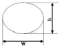

방사선비파괴검사산업기사(구) (2006-03-05 기출문제)
1과목: 방사선투과검사 시험
1. 자분탐상시험법에서 시험품에 직접 전류를 흘려 자화시키는 시험 방법은?
- 프로드법
- 유도자화법
- 영구자석법
- 코일법
(정답률: 알수없음)

2. 방사선투과시험의 탱크현상시 현상액의 보충 방법으로 옳지 못한 것은?
- 한번에 전체 용량의 10%를 초과하지 않도록 1회 보충액으로 한다.
- 보충액의 총량은 최초 현상액의 2배 정도로 제한하여 보충한다.
- 보충액은 현재의 현상액보다 다소 높은 강도로 보충한다.
- 매번 첨가하는 보충액량은 탱크안 용액 부피의 3%를 초과하도록 보충한다.
(정답률: 알수없음)
3. 선원으로부터 1m의 거리에서 방사선량이 16[R]일 때, 거리를 4m로 변경하면 방사선량[R]은?
- 1R
- 2R
- 3R
- 4R
(정답률: 알수없음)
4. 방사선의 종류와 특성에 대한 설명으로 옳지 않은 것은?
- 파와 입자의 두가지 성질을 가지고 있다.
- 방사선투과검사에는 X, λ선 및 중성자선이 이용된다.
- 중성자선의 원자번호가 큰 중원소에 흡수가 잘 된다.
- X및 λ선은 물리적으로 동일한 성질을 지닌다.
(정답률: 알수없음)
5. Co-60 점선원으로부터 10m거리에 있는 작업종사자가 받는 피폭선량이 640mR/h였다. 작업종사자의 피폭 방사선량을 20mR/h이하로 하려면 납 차폐벽의 두께는 얼마로 해야 하는가? (단, 납의 선형흡수계수는 0.0693mm-1)
- 10㎜
- 20㎜
- 50㎜
- 80㎜
(정답률: 알수없음)
6. 감마(λ)선을 이용한 공업용 방사선투과검사에서는 형광스크린을 거이 사용하지 않는다. 그 이유로 적절한 것은?
- 사진의 콘트라스트(contrast)를 높이기 때문에
- 방사선투과사진에 줄무늬가 생기게 하기 때문에
- 상호법칙(reciprocity law)을 따르지 않기 때문에
- 강화인자(intensification factor)가 너무 높기 때문에
(정답률: 알수없음)
7. 방사선 붕괴과정 중 원자액에서 방출하는 방사선이 아닌 것은?
- α-선
- β-선
- 중성미자
- 특성X-선
(정답률: 알수없음)
8. 가속전자가 X선 튜브내의 표적에 부딪쳐 에너지 변환을 일으킬 때 가장 많이 생성되는 것은?
- 열
- 1차 X선
- 1차 γ선
- 2차 X선
(정답률: 알수없음)
9. 방사선 투과 검사시 피폭저감 방법으로 비효율적인 것은?
- 조리개를 사용한다.
- 납장갑을 필히 착용한다.
- 차폐체를 최대한 활용한다.
- 방사선원으로부터 가능한 한 먼 곳으로 작업한다.
(정답률: 알수없음)
10. 1r-192, 50Ci의 선원에서 10m 떨어진 곳의 선량율은 얼마인가? (단, 1r-192의 Rhm값은 0.55이다)
- 27.5R/h
- 2.75R/h
- 275mR/h
- 27.5mR/h
(정답률: 알수없음)
11. 다른 비파괴검사법과 비교하여 방사선투과시험의 주요 장점이 아닌 것은?
- 검사결과의 영구기록
- 내부 결함의 검출
- 표면상 결함의 검출
- 조성의 주요 변화에 대한 검출
(정답률: 알수없음)
12. 산란비를 줄이는 효과가 있는 촬영조건과 관계가 먼 것은?
- 조사범위를 좁힌다.
- 시험체-필름 사이의 거리를 적절히 늘린다.
- 필름카세트를 시험체에 밀착시킨다.
- 차폐 마스크를 사용하다.
(정답률: 알수없음)
13. 다음 중 Co-60 감마선 투과시험의 적용이 곤란한 것은?
- 주조품
- 플라스틱 배관 이음부
- 강관의 벽두께 측정
- 구리판 용접부
(정답률: 알수없음)
14. 다음 중 피사체콘트라스트에 영향을 미치는 인자는 아닌 것은?
- 시험체의 두께차
- 방사선의 선질
- 산라방사선
- 선원의 강도
(정답률: 알수없음)
15. 방사선투과시험에 사용할 X선 발생장치를 선정할 때 고려 해야 할 점이 아닌 것은?
- 듀티 사이클(duty cycle)
- 발생기 창구의 자기필터 기능
- 에너지 범위
- 제어 시스템
(정답률: 알수없음)
16. 관전류 5mA, 노출시간 10분에서 관전류를 10mA로 변환시 노출시간은? (단, 다른 조건은 일정함)
- 20분
- 10분
- 5분
- 2.5분
(정답률: 알수없음)
17. 다음 중 침투탐상시험으로 검출할 수 있는 결함은?
- 플라스틱의 내부결함
- 콘크리트의 내부기공
- 비정질 유리의 열린 표면 결함
- 강관의 표면 및 내부 결함
(정답률: 알수없음)
18. 다음 중 완전류탐상검사시 사용되는 시험코일의 종류가 아닌 것은?
- 내삽형 코일
- 표면형 코일
- 관통형 코일
- 대칭형 코일
(정답률: 알수없음)
19. 방사선 투과사진을 투과한 빛의 밝기 2,000룩스에서, 주위 환경의 밝기는 1,000룩스였다. 주위 환경 밝기가 0룩스 일 때에 비하여 투과사진의 겉보기 콘트라스트는?
- 1/2로 감소한다
- 2/3로 감소한다
- 3/2로 감소한다
- 2배로 증가한다.
(정답률: 알수없음)
20. 방사선 투과선에 대한 산란선 비율이 감소하면 결함상의 콘트라스트는 어떻게 되는가?
- 증가한다.
- 감소한다.
- 변화하지 않는다.
- 산란선의 에너지가 높아짐에 따라 증가한다.
(정답률: 알수없음)
2과목: 방사선투과검사 시험
21. 다른 조건은 변화가 없고 단지 선원에서 시험체까지의 거리를 증가시키면 투과사진의 선명도는?
- 증가한다.
- 감소한다.
- 영향을 받지 않는다.
- 일정거리까지 감소 후 증가한다.
(정답률: 알수없음)
22. 다음과 같은 형태의 표적을 가진 X선 발생장치가 있다. 이 장치의 초점크기 값 f는 얼마인가?

- f=h
- f=w
- f=h+w
- f=(h+w)/2
(정답률: 알수없음)
23. X선관(tube)의 진공도가 저하된 X선 발생장치를 사용할 때 특히 주의할 사항은?
- 접지(earth)를 완전히 한다.
- 예열(aging)를 충분히 한다.
- 관전류(mA)를 낮춘다.
- 관전압(kVp)을 일정히 준다.
(정답률: 알수없음)
24. 다음 중 시험체에 의한 X선의 흡수와 밀접한 관계가 아닌 것은?
- 시험체의 두께
- 시험체의 밀도
- 시험체 재질의 원자적 특성
- 시험체의 영률
(정답률: 알수없음)
25. 방사선투과사진 상에 연마된 표면에 의한 무관련지시를 고려하지 않아도 되는 재질은?
- 아연판
- 주석판
- 알루미늄판
- 철판
(정답률: 알수없음)
26. 다음 중 방사선발생장치에서 발생하는 엑스선의 파장을 결정하는 요인이 아닌 것은?
- 가속 입자의 전하량
- 방사선 발생장치 관전압
- 방사선 에너지
- 방사선 발생장치 관전류
(정답률: 알수없음)
27. X선 발생장치의 취급과 관련된 내용으로 올바르지 못한 것은?
- 사용전 에이징(aging)이 실시된 장비는 사용중에 에이징 할 필요가 없다.
- X선 발생장치는 차로 운반할 때 양극이 위로 가게 한다.
- 관전류가 일정한 장비는 사용중 관전류의 감시가 필요없다.
- X선 발생장치는 특성상 사용전압 계측기에 대한 감시는 필요없다.
(정답률: 알수없음)
28. 사진처리가 끝난 필름에 잔류 황산화물(Thiouslfate)이 규정치를 넘으면 필름이 변색하여 장기보관할 수 없게된다. 잔류 황산화물을 확인할 수 있는 방법은?
- 하이포 잔류 측정법
- 취소 농도법
- 빙초산법
- 에틸렌 산화법
(정답률: 알수없음)
29. 방사선투과시험의 현상도(Degree of develoment)와 관계가 없는 인자는?
- 현상액의 강도
- 현상액의 온도
- 현상시간
- 현상액의 양
(정답률: 알수없음)
30. X선 발생장치를 관전압 250kVp로 작동하였을 때 발생하는 X선 스펙트럼의 최단 파장(Å)은?
- 약0.0⑤
- 약0.⑤
- 약0.5
- 약5.0
(정답률: 알수없음)
31. 20㎜ 두께를 가진 동(Cu) 주물을 관전압 220kV의 X선으로 방사선투과검사할 때, 노출도표가 철을 기준으로 작성 되었을 때 동의 노출시간 계산방법은?
- 철 기준 노출도표를 그대로 사용한다.
- 철 기준 노출도표에서 얻은 시간에 1.4를 곱한다.
- 철 기준 노출도표에서 얻은 시간에 2.0를 곱한다.
- 방사선 등가표에서 얻은 인자에 20㎜ 곱한 두께의 시간을 구한다.
(정답률: 알수없음)
32. 직경이 2m이 압력용기의 전 원주용접부에 대해 1회 노출로 방사선투과검사를 하려 한다. 다음 중 투과도계의 위치와 마커(납 숫자)의 위치로 적합한 것은? (단, 선원은 압력용기 내부에 위치함)
- 투과도계, 마커 모두 압력용기 외부에 부착한다.
- 투과도계, 마커 모두 압력용기 내. 외부 2군데에 부착한다.
- 투과도계는 압력용기 내부에, 마커는 압력용기 외부에 부착한다.
- 투과도계는 압력용기 외부에, 마커는 압력용기 내부에 부착한다.
(정답률: 알수없음)
33. X선 확대 촬영기술에 대하여 옳은 설명은?
- 소(小)초점 사용
- 불선명도가 클것
- 초점과 필름간 거리를 멀리할 것
- 초점과 시험체간 거리를 멀리할 것
(정답률: 알수없음)
34. 1회 노출로 방사선투과사진에 나타난 결함 특성을 관찰하여 그 제품에 미치는 영향을 평가하고자 한다. 이 때 알 수 있는 결함의 특성이라 볼 수 없는 것은?
- 결함의 모양
- 결함의 크기
- 결함의 위치
- 결함의 깊이
(정답률: 알수없음)
35. 방사성 동위원소를 사용하여 방사선투과검사를 하고자 할 때 필요한 검사 장비 및 자재에 해당하지 않은 것은?
- 방사선 조사기
- 원격조정 장치
- 콜리메타
- 고전압원
(정답률: 알수없음)
36. 다른 비파괴시험법과 비교하여 방사선투과시험의 주요 장점이 아닌 것은?
- 시험체 내부결함의 검출
- 검사결과의 영구기록
- 조성의 주요변화에 대한 검출
- 시험체 표면의 피로균열 검출
(정답률: 알수없음)
37. 8mA-min으로 촬영한 방사선 투과사진에서 농도0.8을 얻었다. 농도 2.0의 사진을 얻으려고 한다. 농도 2.0의 사진을 얻으려고 한다. 필름의 특성곡선상에서 농도 0.8과 2.0 사이의 log E 차이가 0.76 이라면 농도 2.0의 사진을 얻기 위한 노출량(mA-min)은?
- 46.4
- 32.2
- 18.4
- 16.0
(정답률: 알수없음)
38. 다음 중 2장의 투과사진을 각각의 눈으로 볼 수 있도록 프리즘이나 거울로써 배열한 장치는?
- Strobo Radiography
- Parallax Radiography
- Stereo Radiography
- Auto Radiography
(정답률: 알수없음)
39. 다음 중 유효선원 크기가 가장 작아 방사선투과시험시 확대 촬영에 가장 유리한 것은?
- 50Ci의 Co-60
- 100Ci의 1r-192
- 400kV의 X선 발생기
- 10MeV의 베타트론
(정답률: 알수없음)
40. X선 필름에 가장 감도가 높은 색깔은?
- 적색(Red)
- 청색(Blue)
- 황색(Yellow)
- 녹색(Green)
(정답률: 알수없음)
3과목: 방사선안전관리, 관련규격 및 컴퓨터활용
41. 종사자가 사고로 인하여 긴급작업시 0.5Sv의 피폭을 받았을 경우 원자력관계사업자는 어떤 조치를 취해야 하는가?
- 방사선작업에 종사하지 않도록 해야 한다.
- 유효선량한도를 초과한 경우에 그 초과된 선량을 2로 나누어 얻은 값에 해당하는 년수 를 지나는 동안 20mSv로 제한한다.
- 유효선량한도를 넘지 않을 경우는 년간 50mSv(5년간 100mSv를 초과하지 않은 범위 내에서)를 최대허용피폭선량으로 한다.
- 앞으로 5년 동안 방사선작업을 제한한다.
(정답률: 알수없음)
42. KS B 0845에 따르면 강관의 원둘레 용접 이음부에 대해서 상질의 종류가 A급 또는 B급을 적용할 때 계조계가 사용되는 관의 바깥 지름은?
- 50㎜미만
- 75㎜이하
- 100㎜미만
- 100㎜이상
(정답률: 알수없음)
43. ASME Sec. Vlll Div.1 압력용기의 방사선투과사진 판정에 대한 설명으로 맞는 것은?
- 불연속을 4등급으로 나누었다.
- 융합부족이 존재시 불합격이다.
- 슬래그 개입이 있을시 길이와 관계없이 불합격이다.
- 시험시야는 10×10㎜ 로 한다.
(정답률: 알수없음)
44. 다음 중 선량 당량의 단위는?
- J/Kg
- R/h
- Sv
- Gy/sec
(정답률: 알수없음)
45. 방사선구역 수시출입자의 연간 등가선량한도에 대해 맞는 것은?
- 수정체 : 15mSv
- 피부 : 250mSv
- 손 : 500mSv
- 발 : 250mSv
(정답률: 알수없음)
46. KS D 0227에서 시험부의 호칭두께가 100㎜일 때 1급(류)에 해당되는 기포(블로홀)의 최대 크기(치수)는?
- 3.0㎜
- 5.0㎜
- 7.0㎜
- 9.0㎜
(정답률: 알수없음)
47. KS D 0245 알루미늄 T형 용접부의 방사선투과시험에서 시험부의 결함 이외 부분의 사진농도는 얼마로 규정하고 있는가?
- 1.5이상 3.5이하
- 2.0이상 4.0이하
- 1.0이상 3.0이하
- 2.5이상 4.5이하
(정답률: 알수없음)
48. 미국기계협회 규격에 의하면 320KV 이하인 X선장비의 초점 크기는 어떤 방법으로 결정하는 것이 좋은 가?
- 와이퍼(wipe) 시험
- 핀홀(pin hole) 방법
- 제조회사의 사양서
- 자연붕괴(decay) 도포
(정답률: 알수없음)
49. ASME 규격에 의거하여 두께가 12.7㎜인 강을 방사선투과 검사할 경우에 사용되는 유공형 투과도계는 17번이다. 2T홀(hole)이 나타났다고 했을 때 이의 감도는?
- 2-1T
- 2-2T
- 2-4T
- 1-2T
(정답률: 알수없음)
50. 다음 중 내부 피폭을 예방하기 위한 방법이 아닌것은?
- 내부 피폭의 원천을 만들지 말 것
- 거리를 멀리 잡을 것
- 섭취시 빨리 배설 등을 통하여 제거할 것
- 섭취의 경로를 막을 것
(정답률: 알수없음)
51. KS D 0242의 적용 범위에 해당하는 것은?
- 강용접부
- 주강품
- 알루미늄 주물
- 알루미늄평판 용접부
(정답률: 알수없음)
52. 외부 방사선방어에서 피폭시 고려대상이 되지 않는 것은?
- 시간
- 거리
- 차폐
- 영률
(정답률: 알수없음)
53. API(미국석유협회) 1104규격에서는 사용하지 않는 필름 (Unexposed Film)의 감광정도를 기준치 이하로 제한하고 있다. 이 규격에 규정한 기준치는 얼마 이하인가?
- 0.⑤H&D
- 0.10H&D
- 0.20H&D
- 0.30H&D
(정답률: 알수없음)
54. 일반인의 손, 발에 대한 연간 등가선량한도는 얼마인가?
- 1.5mSv
- 3mSv
- 15mSv
- 50mSv
(정답률: 알수없음)
55. 원자력법령에서 정한 방사성동위원소 운반종사자의 년간 유효선량한도는?
- 1mSv
- 12mSv
- 15mSv
- 50mSv
(정답률: 알수없음)
56. 다음 중 인터넷 웹서버 구축을 위한 환경과 도구를 제공 하는 것은?
- UNIX
- IIS
- OS/2
- IWS
(정답률: 알수없음)
57. 양쪽 방향으로 데이터의 이동이 가능하나 한번에 한방향으로만 이동 가능한 데이터 전송방식은?
- 반이중전송방식
- 단방향전송방식
- 양방향전송방식
- 전이중방식
(정답률: 알수없음)
58. 우리나라 정부기관인 행정자치부(mogaha)의 도메인 이름으로 옳은 것은?
- www.mogaha.com
- www.mogaha.go.kr
- www.mogaha.co.kr
- www.mogaha.pe.kr
(정답률: 알수없음)
59. 다음 중 컴퓨터의 연산장치와 관계가 없는 것은?
- 누산기
- 기억 레지스터
- 번지 레지스
- 상태 레지스터
(정답률: 알수없음)
60. 다음 중 정보통신을 위한 OSI 7 layer 중 하위계층을 구성하는 각종 통신망의 품질 차이를 보상하고, 송ㆍ수신 시스템간의 논리적 안정과 균열한 서비스를 제공하는 계층은?
- 세션계층(Session layer)
- 전송계층(Transport layer)
- 응용계층(Application layer)
- 네트워크계층(Network layer)
(정답률: 알수없음)
4과목: 금속재료 및 용접일반
61. 다음 용접방법 중 가스용접에 속하는 것은?
- 탄산가스 아크용접
- 산소수소 용접
- 플라즈마 용접
- 원자수소 용접
(정답률: 알수없음)
62. 아크용접 극성인 정극성과 역극성이 모두 올바른 것은?
- DCSP : 용접봉(+)극, 모재(-)극
SCRP : 용접봉(+)극, 모재(-)극 - DCSP : 용접봉(-)극, 모재(+)극
SCRP : 용접봉(+)극, 모재(-)극 - DCSP : 용접봉(+)극, 모재(-)극
SCRP : 용접봉(-)극, 모재(+)극 - DCSP : 용접봉(-)극, 모재(+)극
SCRP : 용접봉(-)극, 모재(+)극
(정답률: 알수없음)
63. 정격 2차 전류가 450A인 아크용접기준 290A의 용접 전류를 사용하여 용접할 경우 이 용접기가 허용사용율은?
- 약 98%
- 약 109%
- 약 115%
- 약 120%
(정답률: 알수없음)
64. 용접시 발생한 변형을 교정하는 일반적인 방법이 아닌 것은?
- 박판에 대한 직선 수축법
- 가열 후 해머질하는 방법
- 절단하여 정형(整形)후 재 용접하는 방법
- 후판에 대하여 가열 후 압력을 가하고 수냉하는 방법
(정답률: 알수없음)
65. 용접균열의 형성 원인을 크게 분류하면 금속학적 요인과 역학적 요인으로 구분할 수 있다. 다음 중금속학적 요인이 아닌 것은?
- 용접시의 가열 냉각으로 생긴 열응력
- 열 영향에 따라서 모재의 연성이 저하되는 것
- 용융시 침입하였다가 또는 확산하는 수소의 영향에 의하여 취하(brittle)되는 경우
- 인, 유황, 주석, 동 등의 유해한 불순물의 포함
(정답률: 알수없음)
66. 아크 용접의 용접부에 기공이 생기는 원인과 가장 관계가 적은 것은?
- 아크의 수소 또는 일산화 탄소가 너무 많을 때
- 용착부가 급냉 될 때
- 용접봉에 습기가 많을 때
- 용접 속도가 느릴 때
(정답률: 알수없음)
67. 용접결합 중 은점(銀店)이 생기는 주원인과 가장 관계가 있는 것은?
- 산소
- 수소
- 질소
- 탄소
(정답률: 알수없음)
68. 압접의 종류가 아닌 것은?
- 점용접
- 단접
- 고주파용접
- 불활성 가스용접
(정답률: 알수없음)
69. 가스용접(산소, 아세틸렌 용접)시 아세틸렌이 과잉일 때 발생되는 불꽃은 어느 것인가?
- 중성불꽃
- 탄화불꽃
- 산화불꽃
- 카바이드 불꽃
(정답률: 알수없음)
70. 불활성가스 금속아크 용접의 장점이 아닌 것은?
- 수동피복 아크용접에 비해 용착율이 높아 고능률적이다.
- TGI용접에 비해 전류밀도가 높아 용융속도가 빠르다.
- 3㎜이하 박판용접에 적합하다
- 각종 금속 용접에 다양하게 적용할 수 있어 응용범위가 넓다.
(정답률: 알수없음)
71. 결정 중에 존재하는 점결함(point defect)이 아닌것은?
- 원자공공(vacancy)
- 격자간 원자(intertitial atom)
- 전위(dislocation)
- 치환형 원자(substituional atom)
(정답률: 알수없음)
72. 구름합금 중 공석변태를 하여 서냉 취성이 심한 합금은?
- 문쯔메탈
- 알루미늄청동
- 연청동
- 인청동
(정답률: 알수없음)
73. 자기변태에 대한 설명으로 틀린 것은?
- 어떤 온도에서 자성의 변화가 나타난다.
- 점진적 연속적인 변화가 나타난다.
- 큐리점을 말한다.
- 결정격자의 모양이 변화한다.
(정답률: 알수없음)
74. 초내열강(초합금=super alloy)의 합금 원소는?
- Ni,Co,Cr 등
- Pb,Mn,Zn
- Cs,Cu,Hg 등
- Aℓ,Mg,Sn 등
(정답률: 알수없음)
75. 전자부품의 솔더링(soldering)으로 가장 많이 사용하고 있고 약 450℃이하의 융점을 갖는 합금은?
- Cu-Sn 계 합금
- Sn-Pb 계 합금
- Cu-Pb 계 합금
- Ni-Cr 계 합금
(정답률: 알수없음)
76. 금속의 합금화에서 치환형 고용체가 되기 위한 조건 중 맞는 것은?
- 두 원자 반지름 차이가 약 15%이상이면 좋다.
- 서로 다른 결정구조를 가지는 것이 좋다.
- 전기음성도의 차이가 많이 날수록 좋다.
- 같은 원자가를 가지면 좋다.
(정답률: 알수없음)
77. 슬립(slip)에 대한 설명 중 잘못된 것은?
- 체심입방정의 주요 슬립방향은[111]이다.
- 원자밀도가 최대인 방향으로 슬립이 일어난다.
- 슬립계가 많은 금속일수록 소성변형이 쉽다.
- 육방정계에 속하는 금속이 가장 가공하기 쉽다.
(정답률: 알수없음)
78. 특수강에 첨가되는 특수원소의 특성이 아닌 것은?
- Ni-인성증가, 저온충격저항 증가
- Cr-내마모성, 내식성 증가
- Si-전기특성, 내열성 양호
- Mn-뜨임취성, 고온강도 방지
(정답률: 알수없음)
79. 40~55% Co, 15~33% Cr, 10~20% W, 2~5% C로 된 주조경질 합금은?
- 고속도강
- 스텔라이트
- 합금공구강
- 다이스강
(정답률: 알수없음)
80. 수소 저장용 합금의 기능과 용도를 설명한 것 중 틀린 것은?
- 촉매작업(암모니아 합성)
- 수소분리 및 정제(수소의 순도 99.9999%)
- 열 에너지의 저장 및 수송(태양 장기 축열 시스템, 냉온방용)
- 저온, 저압에서 수소저장→저압수소 발생(케미컬엔진)
(정답률: 알수없음)